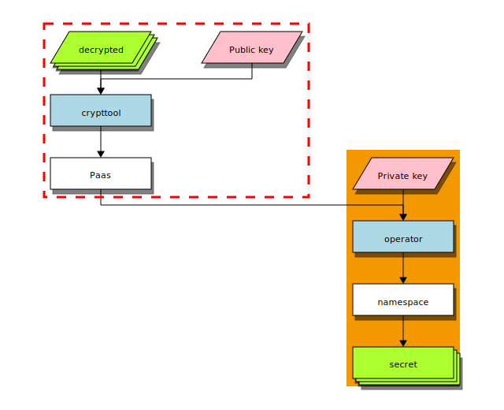
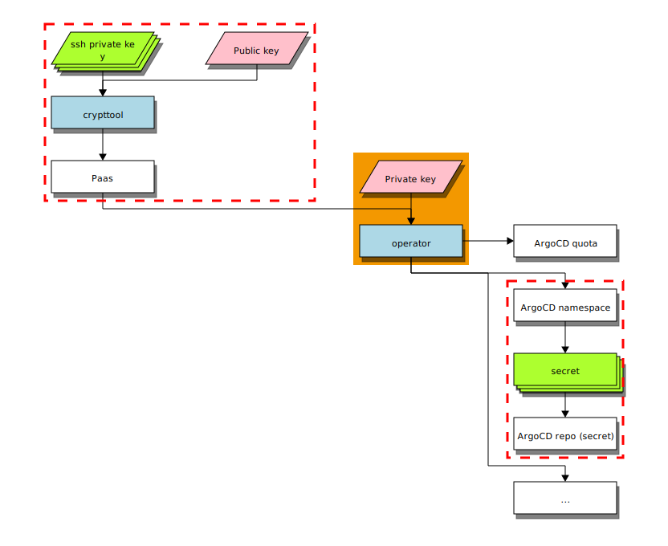

Encrypted Secrets¶
To enable bootstrapping a project 100% 'as code', the Paas operator has a feature called Encrypted Secrets.
The idea is that people can create a Paas to bootstrap an application front to back, including required namespaces, quotas, an application specific ArgoCD and a running application, in one go.
However, when using private repositories, ArgoCD needs to be provided with an SSH key (as a secret) for ArgoCD to gain access to the git repository. These ssh secrets need to be provided before ArgoCD can start acting on repo contents, which is why providing these secrets is part of the Paas solution.
Another consideration was that we want secrets to be defined in a Paas, and since a Paas can be public, we naturally don't want the secrets to be plain-text, which is why we implemented encryption.
Encryption is based on RSA where a public key (shared with everyone) is used to encrypt, and a private key (deployed with the Paas operator) is used to decrypt. In this way everyone can encrypt, but only the Paas operator can decrypt.
For ease of use, and to enable extra management capabilities, the Paas operator comes with additional tooling:
- an API, which can be used to encrypt without needing to share the public key;
- A crypt tool, available from a separate repository, that can be used to encrypt, re-encrypt, generate key pairs, and inspect encrypted keys;
You can find the crypt tool at https://github.com/belastingdienst/opr-paas-crypttool
Note
Note that the crypt tool is not part of the operator anymore, but can be used separately. It was moved into a separate repository after the release of version v1.12.0 of the operator.
opr-paas-crypttool requires access to the private key to be usable...
How it works¶
- The DevOps engineer encrypts his with the api, or with the CLI; Encryption is done using the Paas public key (the result can only be decrypted using the Paas private key).
- multiple options:
- The DevOps engineer adds the encrypted secret to the
Paas.Spec.Secretsblock - The DevOps engineer adds the encrypted secret to the
Paas.Spec.Namespaces[*].Secretsblock - The DevOps engineer adds the encrypted secret to the
Paas.Spec.Capabilities[*].Secretsblock - The DevOps engineer adds the encrypted secret to a
PaasNS.Spec.Secretsblock - Paas controller decrypts the secret using the private key and the name of the paas, creates the required namespace and creates the secrets in the namespaces as required

Defining a secret¶
secrets are processed by the PaasNs controller and as such need to be defined
in the PaasNs. Additionally, secrets can also be created in a Paas.
Defining secrets in a Paas¶
The Paas controller only manages secrets in Paas namespaces which can be defined as part of a Paas (generic, capability or namespace), or a PaasNS.
secrets can be defined in a Paas on three levels:
- as part of the spec, in which case the Paas controller will add the
secretto every namespace created by the Paas controller - as part of capability, in which case the Paas controller will add the
secretto the namespace created for this capability specifically - as part of a namespace defined in the namespaces block, in which case the Paas controller will add the
secretto the namespace specifically
Example
---
apiVersion: cpet.belastingdienst.nl/v1alpha2
kind: Paas
metadata:
name: my-paas
spec:
capabilities:
argocd:
# Specifying a secret for a specific capability namespace
secrets:
"ssh://git@github.com/belastingdienst/paas.git": >-
2wkeKebCnqgl...L/jDAUmhWG3ng==
namespaces:
mycustomns:
# Specifying a secret for a specific user namespace
secrets:
"ssh://git@github.com/belastingdienst/paas.git": >-
2wkeKebCnqgl...L/jDAUmhWG3ng==
secrets:
# Specifying a secret for all namespaces belonging to this paas
"ssh://git@github.com/belastingdienst/paas.git": >-
2wkeKebCnqgl...L/jDAUmhWG3ng==
requestor: my-team
quota:
limits.cpu: "40"
Defining secrets in a PaasNs¶
The PaasNs controller is the one to manage the secrets in the Paas namespaces a defined in the PaasNs (either manually created or managed by the Paas controller).
The PaasNs controller will update secrets in the namespace if the secret
value is changed in the PaasNs resource. However, when the key changes
(e.a. ssh://git@github.com/belastingdienst/paas.git in the example below), the
original secret is not removed.
Example
Usecase 1: SSH secrets¶
One option (the most common usecase) is to add git credentials for argocd.
Example
---
apiVersion: cpet.belastingdienst.nl/v1alpha2
kind: Paas
metadata:
name: my-paas
spec:
capabilities:
argocd:
# Specifying a secret for a specific capability namespace
secrets:
"ssh://git@github.com/belastingdienst/paas.git": >-
2wkeKebCnqgl...L/jDAUmhWG3ng==
requestor: my-team
quota:
limits.cpu: "40"
How it works¶
- A DevOps engineer generates a SSH key pair;
- The DevOps engineer configures his public SSH key to be accepted by his git repository (e.a. GitHub, gitlab, gitea, bitbucket, etc.)
- The DevOps engineer encrypts the private SSH key and adds to argocd capability
- Paas controller creates argocd namespace with ArgoCD and secret
- ArgoCD contacts git and uses the secret to authenticate;
- ArgoCD creates resources as is defined in the git repository;
- Application comes alive;
